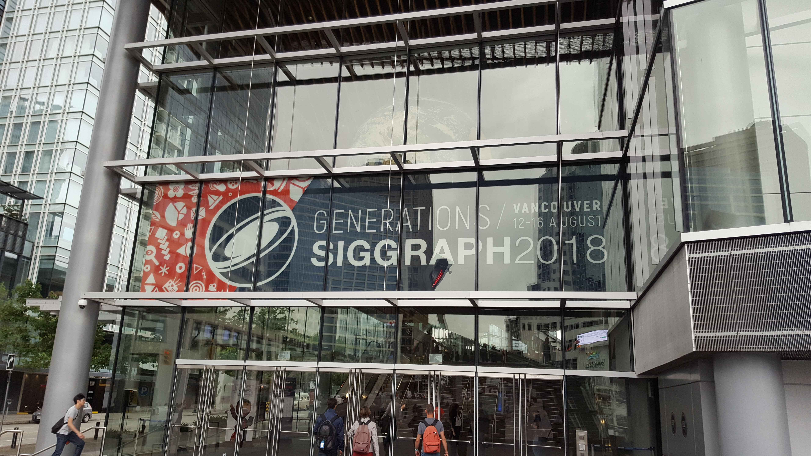
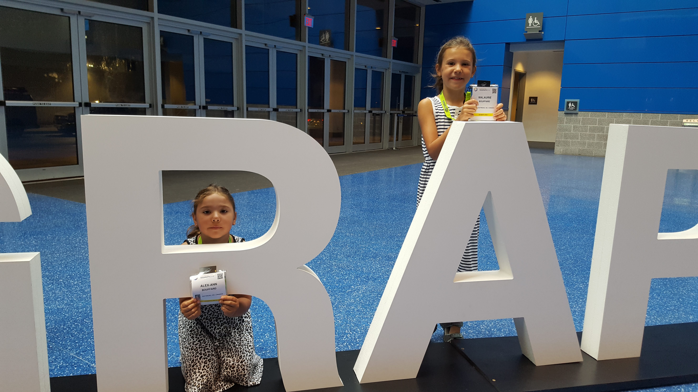
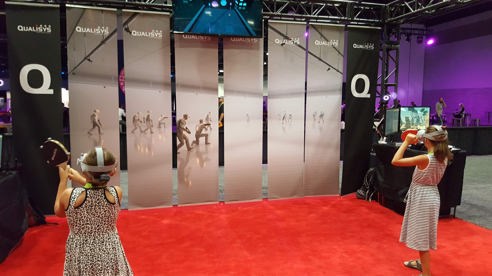
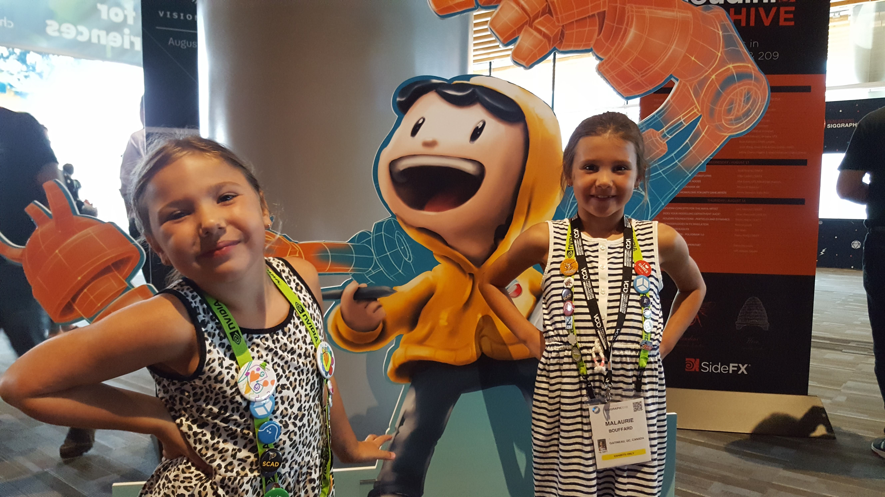
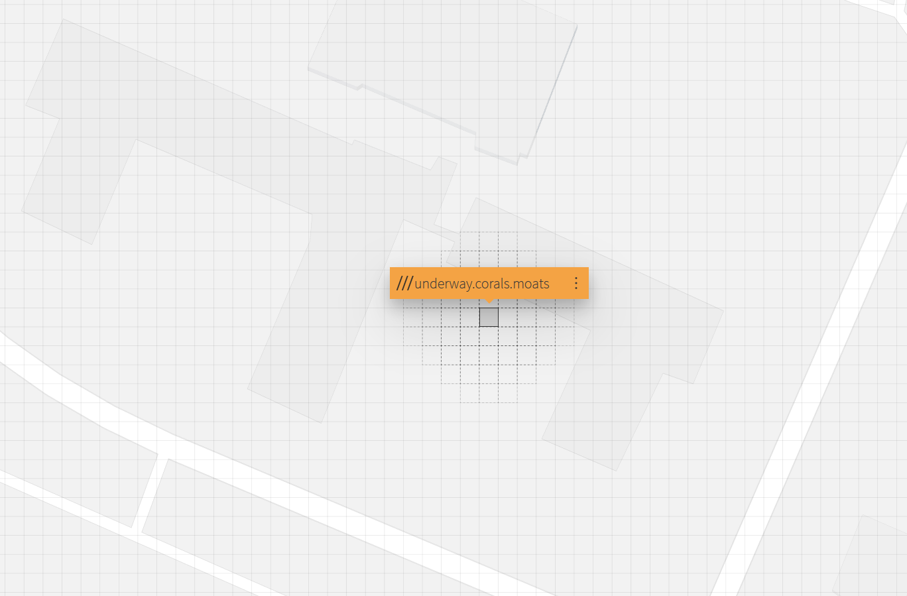
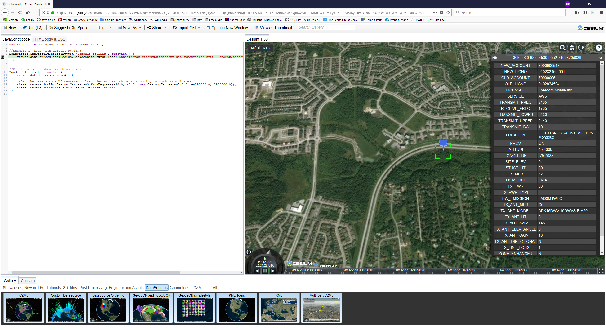
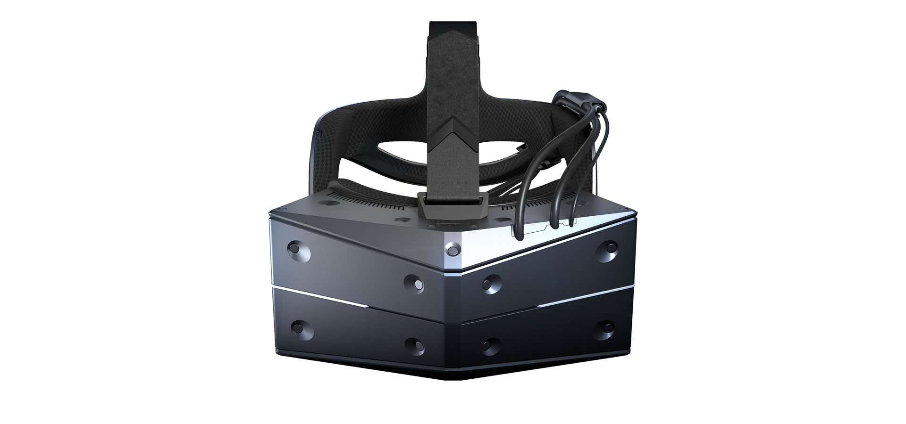
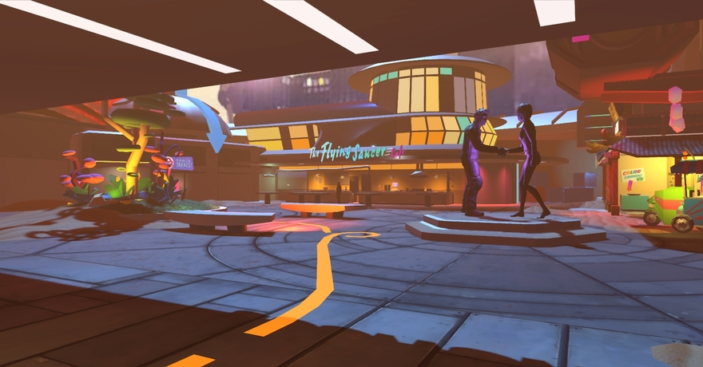

SIGGRAPH 2018
Conference Report
Jean-Michel Bouffard
Outline
- What is ACM SIGGRAPH
- Contents
- Tutorials and trainings
- Sessions
- Exhibitions
CRC Ideas in grey box
ACM SIGGRAPH?
SIGGRAPH 2018
- Special Interest Group on Computer GRAPHics and Interactive Techniques
- Topics covered are a mix of CG, Animation, VR, Games, Digital Art, Mixed Reality and Emerging Technologies
- 17000 attendees from research, gaming and cinematography sectors worldwide
Vancouver Conference Center
Crew of young engineers
VR Pingpong
Characters
Tutorials / Courses
Three.js 3D Engine
- Cross-browser JS library and API based on WebGL to create and display animated 3D graphics
- Three.js source repository at https://github.com/mrdoob/three.js/
- Tutorial and sample code at https://github.com/jmbouffard/ThreeJSSandBox
- Advantages:
- Platform and OS independent, supported on most browsers with WebGL 1.0, including most popular mobile browsers
- Rendering on native hardware efficiently
- Integrates with standard web packages and apps
Three.js tutorial
Three.js Features
- Proposed dat.GUI (https://github.com/dataarts/dat.gui) to easily create sliders and controls for the 3D environment
- Many 3D model loaders available (OBJ, GLTF, etc) threejs.org/docs/index.html#api/en/loaders/FileLoader
- WebGL Shaders can be used directly with GLSL scripting
- Alternatives to Three.js -> Babylon.js
Three.js would be useful to design quick prototypes that are easy to share without the need of complex development frameworks and APIs
JS development tools
Presenter discussed development methodology for web based interactive projects- Chrome: most used browser for Web development due to the high quality of the tracking, debugging and profiling tools.
- http://jshint.com/: Tools that provides warnings on JS code and helps investigate issues.
- https://spector.babylonjs.com/: Framework to explore and inspect WebGL scenes.
Introduction to WebGL
- Lower level JS API for rendering interactive 2D and 3D graphics within any compatible web browser
- WebGL is integrated completely into all the web standards, allowing GPU-accelerated usage of physics and image processing in web page canvas
- WebGL versus OpenGL:
- WebGL 1.0 based on OpenGL ES 2.0
- WebGL 2.0 based on OpenGL ES 3.0
- Tutorials on the official Khronos WebGL repository on at https://github.com/KhronosGroup/WebGL
Unity XR graphics group
- New more modern graphics API are actively being developed, for example, DirectX 12, M and Vulkan (OpenGL successor)
- WebGL is the rendering technology that will be used to provide Web based Virtual Reality (VR)
- Standards for web based Virtual and Augmented reality are being developed by the WebXR group at https://immersive-web.github.io/webxr/
WebXR compliance of the CRC prototypes would lower the barrier for the users to run VR and AR applications and would assure easier deployment. For example, distributing a WebXR based application would be done using a single web server and would run on a typical modern web browser paired to a generic VR/AR hardware
Deep Learning Crash Course
- MNIST "Hello world" of ML: A
collection of 70k hand written digits

- Andrew Glassner ressources
Sessions
Maps, Urban Data, Geocoding
What3Words
- https://what3words.com/ is an innovative way of sharing the location of a person using a simple scheme of 3 regular English words. It is based on grids of 3m x 3m for which a unique combinations of words is assigned
- Ever wondered what underway, corals and moats had in common?
CRC Entrance
CesiumJS
- New supported features
- Draco (https://google.github.io/draco/), 3D model compression built specifically to compress 3D assets and accelerate their loading over a network connection
- Sandcastle application building tool to help developers creating CesiumJS prototypes
- Release of ION platform, a commercial platform composed of web services and tools to complement CesiumJS’s visualization, creating a complete 3D mapping platform
Cesium Sandcastle
CesiumJS
- Roadmap
- Three.js Cesium integration
- Dynamic 3D tiles styling
- Data conversions
- Safe Software (FME) data conversion solutions for CesiumJS https://www.safe.com/integrate/cesium-3d-tiles/
- Native OBJ file format conversion to GLTF for more efficient use within the 3D environment (smaller binary file and faster rendering) with obj2gltf (https://github.com/AnalyticalGraphicsInc/obj2gltf)
CityGML
- Detailed models of urban areas available in CityGML format. For example, the Montreal open data portal
CityGML Viewer
Exhibitions
News
- Unreal Studio + Unreal Engine
- EPIC Games is moving their popular Unreal Engine technology to new capabilities for cinematographic and industrial applications with Unreal Studio
- New STARVR headset with better resolution, improved field of view, flexible tracking solutions, etc

Teradici
- Teradici (https://www.teradici.com/) is proposing a remote desktop solution based on the PC-over-IP (PCoIP) proprietary protocol
- Using the full hardware accelerated graphical capability of the workstation
- Offers compatible VMs in both AWS and Azure
This technology could address an issue that we have at CRC when
trying to use GPU-enabled VMs. Windows remote desktop loads the
general graphical driver no matter what is the hardware available
on the VM.
Collaborative VR
Solutions for multi-users communication and collaboration in a VR environment
- Collaborative Exploration of Urban Data in VR and AR from Columbia University https://github.com/ColumbiaCGUI/MercuryMessaging
- VR.ON http://vr-on.com/
- High Fidelity https://highfidelity.com/
Collaborative VR can be used to connect multiple users to the
same environment in real-time and enable natural communication.
Demonstrations of this technology were available and the most
promising was High Fidelity. User defined environment from CRC
could be set-up to run with such technoly.
High Fidelity
The End
Jean-Michel Bouffard
Slides at sandbox.portableinnovation.ca/ThreeJSSandBox (github.com/jmbouffard/ThreeJSSandBox)